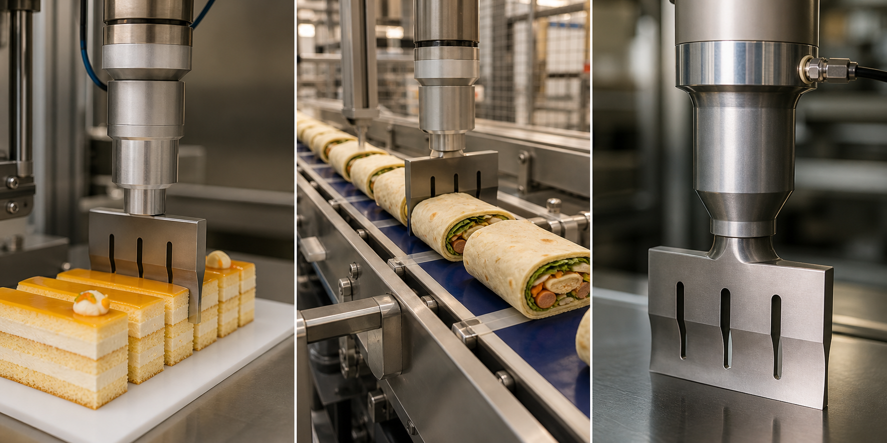
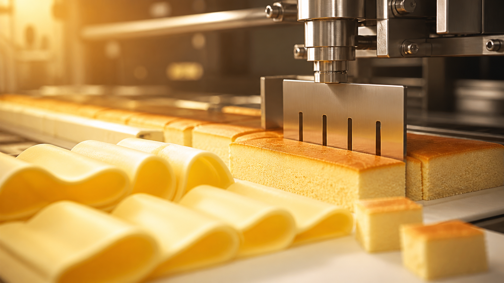

低摩擦切割
高频振动让刀具更容易穿过物料，降低压痕、挤压和边缘破损。

超声波切割通过高频振动降低刀具与物料之间的摩擦，适合黏性、松脆、夹层、冷冻或柔软食品。切口整齐，减少拖拽、粘刀和产品变形，帮助产线保持稳定节拍。
从单机刀具到自动化模组，系统可根据产品尺寸、切割节拍、温度和卫生等级进行组合。适用于奶酪片、蛋糕、面包、卷饼、糖果和半成品冷冻食品。

针对高黏度、多层结构和洁净生产需求，提供比传统机械切割更稳定的工艺窗口。
高频振动让刀具更容易穿过物料，降低压痕、挤压和边缘破损。
奶油、芝士、糖浆或夹心食品更少残留在刀面，产线停机清洁次数更少。
可与输送、定位、分拣和包装设备联动，实现连续生产节拍。
支持直线、分条、分块、圆弧、锯齿边等多种焊头和刀具形态。
先验证切口和节拍，再确定刀具、发生器、换能器和自动化接口。
确认食品结构、温度、尺寸、含水量和切割目标。
用不同频率和刀型比较切面、附着、碎屑和产能。
设计固定方式、运动轴、输送节拍和安全防护。
完成设备调试、操作培训、备件建议和维护计划。
覆盖手动工位、半自动设备和整线集成，可按现场空间和节拍定制。
稳定输出高频能量，支持功率监控、报警和自动化控制接口。
根据食品厚度和切割阻力匹配能量传递效率。
提供直刀、圆刀、锯齿边和异形刀具，便于卫生清洁。
可接入输送线、伺服轴、机器人和上位机控制系统。
整理常见食品类别、切割问题、刀具选择和集成注意事项，便于内部评估。
留下产品类型、当前切割方式和目标产能，我们会根据样品和现场条件给出初步方案。